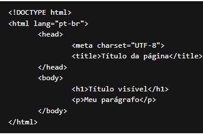

● Utilize a propriedade color no CSS. ● Defina o valor da propriedade como blue.
● Utilize a propriedade font-family no CSS. ● Defina o valor da propriedade como Arial.
Aprenda o que é HTML semântico e como aplicar no seu código para aumentar a acessibilidade e não perder pontos com o Google (SEO) e outros buscadores.
● Utilize a propriedade font-size no CSS. ● Defina o valor da propriedade como 24px.
● Utilize a propriedade margin no CSS. ● Defina o valor da propriedade como 10px.
Deixar as páginas de um site bem classificadas nos buscadores é um trabalho que envolve muitos fatores e um deles é a qualidade do código.
● Utilize a propriedade text-align no CSS. ● Defina o valor da propriedade como center.
● Utilize a propriedade list-style-type no CSS. ● Defina o valor da propriedade como disc. ● Utilize a propriedade color para definir a cor dos marcadores como red.
● Utilize a propriedade border no CSS. ● Defina o valor da propriedade como 1px solid black.
| bola | bolo | bela | balé | base |
|---|
● Utilize a propriedade width no CSS. ● Defina o valor da propriedade como 200px.
● Utilize a propriedade color no CSS. ● Defina o valor da propriedade como green. ● Utilize a propriedade text-decoration para definir o sublinhado como underline.
https://www.biologianet.com● Utilize a propriedade background-color no CSS. ● Defina o valor da propriedade como blue. ● Utilize a propriedade color para definir a cor do texto como white.